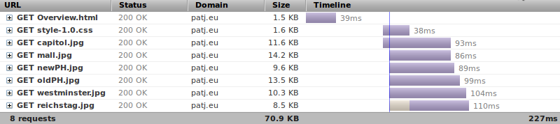

Mobile Jun 2011 - Weeks 5 Assignment
Student: pjacquot - Patrice Jacquot
During this assignment we optimize the web page and related resources for performance on mobile.
Web page original versionAt first, we remove elements in HTML page that are not used for displaying it:
In CSS files, all unused selectors were removed:
I also shortened the name of two images (palace-of-westminster.jpg to westminster.jpg and parliament-building-reichstag.jpg to reichstag.jpg.
Nevertheless, width and height declaration for each image are kept, despite it is not as critical to keep it in a non-mobile context.
Web page after step 1Flags in the GIF format are replaced with the SVG versions grabbed from Wikipedia (Creative Commons licence). SVG has the advantage to be displayed without aliasing at any resolution. SVG also benefits noticeably from additional compression while JPG don't.
JPEG photos have been optimized with GIMP, using these properties:
Images with resolutions higher than actually displayed size are sized down.
Web page after step 2First of all, I regrouped the two CSS files into style.css. While the number of HTTP requests for this single page could be better if the CSS declarations were inlined in the HTML file, I choosed to keep it apart because in reality the stylesheet would typically be reused. Furthermore, the CSS file can be put in browser cache and not downloaded again when the content changes.
Secondly, flag images are embedded in the stylesheet as data URI. To choose the best encoding between base64 and URL-Encoding, I made two files in which I concatenated the four flags to test compression with gzip. Intuitively, we can hope that the URL encoded version will be smaller after compression depite a bigger original size. We can have this intuition because the compression of full text is usually more efficient than the compression of non textual data.
| Base 64 | URL Encoded | |
|---|---|---|
| Original file | 5556 bytes (base64) | 6815 bytes (url-encoded) |
| Compressed file | 2048 bytes (base64.gz) | 1282 bytes (url-encoded.gz) |
The intuition is validated, we reduce the size by 37% using URL encoding instead of base64 for SVG images !
Web page after step 3Remark: USA and Australia flags are buggy under Firefox 5, but show correctly under Chrome and Opera.
Now we can minify the web page and the stylesheet to remove spaces, new lines, etc...
To minify style.css, I used http://tools.w3clubs.com/cssmin/, it reduced file size by 2.16%.
To minify Overview.html, I used http://kangax.github.com/html-minifier/, which reduced the file by 5.81% with very aggresive optimization (quotes between attribute values are removed which is maybe not standard).
Web page after step 4The web page and stylesheet are statically compressed with gzip using the best compression level (--best parameter).
gzip --best Overview.html gzip --best style-1.0.css
The web server is Nginx. To enable serving precompressed files, I compiled Nginx with this option:
./configure --with-http_gzip_static_module
Then I enabled it for the specific directory of the assignement in Nginx configuration.
The stylesheet file is versionned (style-1.0.css) for optimal caching. Because we make the commitment to always update the stylesheet by incrementing its version, we can set it's expiration date to the end of the world of computers: 31 December 2037 !
Nginx configuration:
# W3C Mobile Web course specific configuration
location /w3c/mobile {
# Enable serving static gzipped files
gzip_static on;
# Versionned resources never expire
location ~ ^/w3c/mobile/.+-\d+\.\d+\.(gif|jpg|jpeg|css|js)$ {
# max sets the Expires header to 31 December 2037 23:59:59 GMT, and the Cache-Control max-age to 10 years
expires max;
}
}
Web page after final step
The following Firebug report of the final version shows that 8 files are loaded for a total of 70.9 KB.
The Overview.html and style.css files served are the compressed versions.
The following table shows the evolutions of optimizations step by step.
| Version | Load time | HTML | JavaScript | CSS & Flags | Total without photos | JPEG Photos | Total size | Resources |
|---|---|---|---|---|---|---|---|---|
| Original | 984ms | 6 KB | 24 KB | 8.2 KB | 38.2 KB | 191.1 KB | 229.3 KB | 14 |
| Step 1 | 967ms | 4.5 KB | / | 8.0 KB | 12.5 KB | 191.1 KB | 203.6 KB | 13 |
| Step 2 | 742ms | 4.5 KB | / | 5.7 KB | 10.2 KB | 191.1 KB | 201.2 KB | 13 |
| Step 3 | 503ms | 4.2 KB | / | 7.9 KB | 12.1 KB | 67,8 KB | 79.9 KB | 8 |
| Step 4 | 336ms | 3.5 KB | / | 7.7 KB | 11.2 KB | 67.8 KB | 78.9 KB | 8 |
| Final | 227ms | 1.5 KB | / | 1.6 KB | 3.1 KB | 67.8 KB | 70.9 KB | 8 |